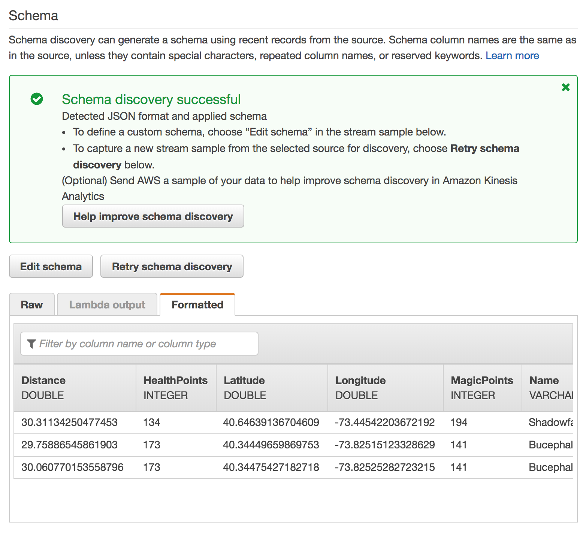
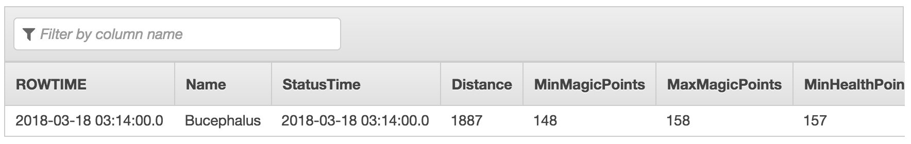

In this module, you’ll create an Amazon Kinesis Data Analytics application to aggregate sensor data from the unicorn fleet in real-time. The application will read from the Amazon Kinesis stream, calculate the total distance traveled and minimum and maximum health and magic points for each unicorn currently on a Wild Ryde and output these aggregated statistics to an Amazon Kinesis stream every minute.
The architecture for this module involves an Amazon Kinesis Data Analytics application, source and destination Amazon Kinesis streams, and the producer and consumer command-line clients.
The Amazon Kinesis Data Analytics application processes data from the source Amazon Kinesis stream that we created in the previous module and aggregates it on a per-minute basis. Each minute, the application will emit data including the total distance traveled in the last minute as well as the minimum and maximum readings from health and magic points for each unicorn in our fleet. These data points will be sent to a destination Amazon Kinesis stream for processing by other components in our system.
Use the Amazon Kinesis Data Streams console to create a new stream named wildrydes-summary with 1 shard.
✅ Step-by-step Instructions
Go to the AWS Management Console, click Services then select Kinesis under Analytics.
Click Get started if prompted with an introductory screen.
Click Create data stream.
Enter wildrydes-summary into Kinesis stream name and 1 into Number of shards, then click Create Kinesis stream.
Within 60 seconds, your Kinesis stream will be ACTIVE and ready to store real-time streaming data.
Build an Amazon Kinesis Data Analytics application which reads from the wildrydes stream built in the previous module and emits a JSON object with the following attributes each minute:
| Name | Unicorn name |
| StatusTime | ROWTIME provided by Amazon Kinesis Data Analytics |
| Distance | The sum of distance traveled by the unicorn |
| MinMagicPoints | The minimum data point of the MagicPoints attribute |
| MaxMagicPoints | The maximum data point of the MagicPoints attribute |
| MinHealthPoints | The minimum data point of the HealthPoints attribute |
| MaxHealthPoints | The maximum data point of the HealthPoints attribute |
Set the destination stream of the application to wildrydes-summary.
✅ Step-by-step directions
Switch to the tab where you have your Cloud9 environment opened.
Run the producer to start emiting sensor data to the stream.
./producerActivately producing sensor data while we’re building our application will allow Amazon Kinesis Data Analytics to auto-detect our schema.
Go to the AWS Management Console, click Services then select Kinesis under Analytics.
Click Create analytics application.
Enter wildrydes into Application name and then click Create application.
Click Connect streaming data.
Select wildrydes from Kinesis stream.
Scroll down and click Discover schema, wait a moment, and ensure the schema was properly auto-discovered.

Ensure that the auto-discovered schema includes:
| Column | Data Type |
|---|---|
| Distance | DOUBLE |
| HealthPoints | INTEGER |
| Latitude | DOUBLE |
| Longitude | DOUBLE |
| MagicPoints | INTEGER |
| Name | VARCHAR(16) |
| StatusTime | TIMESTAMP |
Click Save and continue.
Click Go to SQL editor. This will open up an interactive query session where we can build a query on top of our real-time Amazon Kinesis stream.
Click Yes, start application. It will take 30 - 90 seconds for your application to start.
Copy and paste the following SQL query into the SQL editor:
CREATE OR REPLACE STREAM "DESTINATION_SQL_STREAM" (
"Name" VARCHAR(16),
"StatusTime" TIMESTAMP,
"Distance" SMALLINT,
"MinMagicPoints" SMALLINT,
"MaxMagicPoints" SMALLINT,
"MinHealthPoints" SMALLINT,
"MaxHealthPoints" SMALLINT
);
CREATE OR REPLACE PUMP "STREAM_PUMP" AS
INSERT INTO "DESTINATION_SQL_STREAM"
SELECT STREAM "Name", "ROWTIME", SUM("Distance"), MIN("MagicPoints"),
MAX("MagicPoints"), MIN("HealthPoints"), MAX("HealthPoints")
FROM "SOURCE_SQL_STREAM_001"
GROUP BY FLOOR("SOURCE_SQL_STREAM_001"."ROWTIME" TO MINUTE), "Name";Click Save and run SQL. Each minute, you will see rows arrive containing the aggregated data. Wait for the rows to arrive.

Click the Close link.
Click Connect to a destination.
Select wildrydes-summary from Kinesis stream.
Select DESTINATION_SQL_STREAM from In-application stream name.
Click Save and continue.
Use the command line consumer to view messages from the Kinesis stream to see the aggregated data being sent every minute.
✅ Step-by-step directions
Switch to the tab where you have your Cloud9 environment opened.
Run the consumer to start reading sensor data from the stream.
./consumer -stream wildrydes-summaryThe consumer will print the messages being sent by the Kinesis Data Analytics application every minute:
Stop and start the producer while watching the dashboard and the consumer. Start multiple producers with different unicorn names.
✅ Step-by-step directions
Switch to the tab where you have your Cloud9 environment opened.
Stop the producer by pressing Control + C and notice the messages stop.
Start the producer again and notice the messages resume.
Hit the (+) button and click New Terminal to open a new terminal tab.
Start another instance of the producer in the new tab. Provide a specific unicorn name and notice data points for both unicorns in consumer’s output:
./producer -name BucephalusVerify you see multiple unicorns in the output:
{
"Name": "Shadowfax",
"StatusTime": "2018-03-18 03:20:00.000",
"Distance": 362,
"MinMagicPoints": 170,
"MaxMagicPoints": 172,
"MinHealthPoints": 146,
"MaxHealthPoints": 149
}
{
"Name": "Bucephalus",
"StatusTime": "2018-03-18 03:20:00.000",
"Distance": 1773,
"MinMagicPoints": 140,
"MaxMagicPoints": 148,
"MinHealthPoints": 132,
"MaxHealthPoints": 138
}🔑 Amazon Kinesis Data Analytics enables you to query streaming data or build entire streaming applications using SQL, so that you can gain actionable insights and respond to your business and customer needs promptly.
🔧 In this module, you’ve created a Kinesis Data Analytics application that reads from the Kinesis stream of unicorn data and emits a summary row each minute.
✅ Proceed to the next module, Stream Processing, wherein you’ll store the summary data from the Kinesis Data Analytics application in an Amazon DynamoDB table.